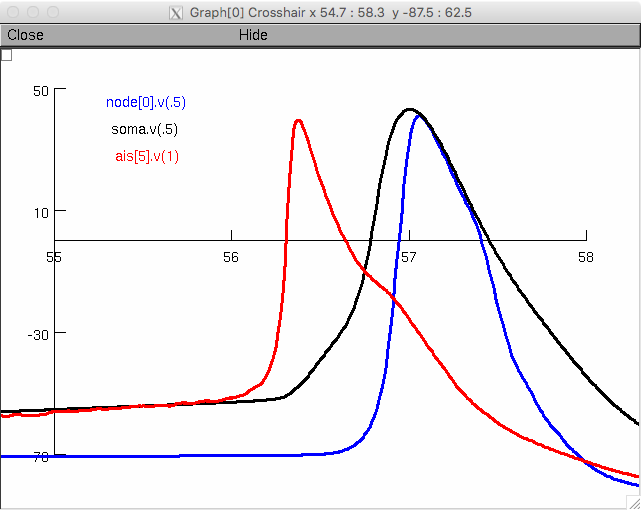

Singh C, Levy WB (2017)
This is the readme for the model associated with the paper:
Singh C, Levy WB (2017) A consensus layer V pyramidal neuron can sustain interpulse-interval coding. PLoS One 12:e0180839
This NEURON model was contributed by C Singh. If you need more help than provided below, please see this help page:
https://senselab.med.yale.edu/ModelDB/NEURON_DwnldGuide.cshtml
running
- the files in the mechanism folder need to compiled by NEURON
- use the NEURON gui to launch the file mechanism/run_act.hoc
- this will run the code with a current injection and save data on channels in the AIS and voltages accross the neuron to the data folder
Afer a minute or so a graph appears whose first action potential should look something like:

which is similar to the AP in figure 5 of the paper.
overview
- the mechanism folder includes mod files for channels as well as the main running file
- files with "_stoch" in the name are stochastic
- main.hoc initializes everything
- the morphology folder includes files detailing the shapes of different axons
- densitymechs.hoc distributes the passive and active conductances through the NEURON
- injectsoma.hoc inserts an IClamp at the soma and runs the simulation
- c.ses loads a gui for viewing the voltage over time
- recording.hoc defines methods for recording / saving data
- mechanism/run_act.hoc runs and displays an example action potential
- the model is largely based on: (Hu, et al. 2009): "Distinct contributions of Na v 1.6 and Na v 1.2 in action potential initiation and backpropagation.", which was itself built up through several studies
- the main change is the change to stochastic Na channels
- other minor changes are described in the paper (Singh & Levy, 2017) "A consensus layer V pyramidal neuron can sustain interpulse-interval coding."
- part of model is based on
- Mainen, Z. F. and Sejnowski, T. J. Nature 382: 363-6 (1996)
- Yu, Y., Shu, Y., et al. J Neurosci 28: 7260-72 (2008)
- Shu, Y., Hasenstaub, A., et al. Nature 441: 761-5. (2006)
- Kole MH, Hallermann S, Stuart GJ (2006) J Neurosci 26:1677-87